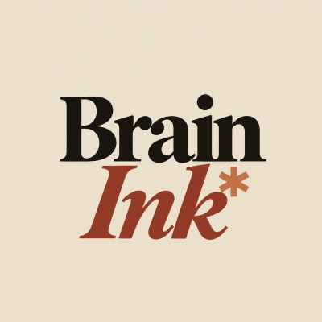

Every Impact Project is published under the member's own name — researched, drafted, and signed. The byline is the most portable credential we offer.
![]()
Youth for Sustainable Policy
Loading Youth for Sustainable PolicyYouth for Sustainable Policy
Loading Youth for Sustainable PolicyYouth for Sustainable Policy is a youth-led initiative bridging research, storytelling, and policy dialogue — built so that young people can enter policy spaces with the same credibility as anyone else in the room.
A note from founder, Mei Tong K.
Young people are among those most profoundly affected by the policy decisions being made today — on climate, economic systems, digital governance, and public health — yet they are rarely given accessible entry points to understand or influence those decisions.
YSP exists to close that gap. It does so not by simplifying policies, but by equipping young people with the research skills, the writing practice, the network, and the published track record that allow them to enter policy spaces with genuine credibility.
The byline, the certificates, the mentor relationship, and the alumni network are not afterthoughts — they are mechanisms through which YSP converts programme participation into career-relevant evidence that members can point to for the rest of their professional lives.
Every YSP member finishes a cohort with four things they can point to for the rest of their career — not as keepsakes, but as the working proof that the work was real.
Every Impact Project is published under the member's own name — researched, drafted, and signed. The byline is the most portable credential we offer.
A signed track-completion certificate, issued by YSP and recognised across our partner institutions. Plain, verifiable, and earned.
A practitioner mentor walks alongside every member across the 16-week curriculum. Most relationships outlast the cohort.
An alumni database that opens up referrals, collaborations, and introductions across research, policy, and civic institutions in the region.
YSP is youth-led, practitioner-guided, and built on the belief that good policy work requires patience, evidence, and people who genuinely care about the outcome.
Founded by a team of students and early-career practitioners who wanted policy work to be something young people could enter — not just read about. The C-Suite is youth; the advisor bench is senior.
Membership is free and always will be. There are no application fees, no hidden tracks, and no prerequisites — just a willingness to do the work seriously, and a pledge to do it with care.
YSP is grounded in Singapore and Southeast Asia, but our network spans 16+ countries. Members work on issues that matter regionally — and meet collaborators from far beyond it.
By 31 December 2027, YSP aims to be a formally established, internationally operating youth policy organisation and social enterprise: sustainable, professionally run, and led by young people around the world.
Registered, with a seated Governing Board and published accounts, so that partners and funders can work with us with confidence.
Active team members across research, programmes, growth and communications, many joining through the GreenHouse Internship Programme.
A large global ambassador network, organised through regional chapters and led by young people in their own communities.
Steady support from grants, partners and our own social-enterprise work, with a small professional core that keeps the work running.

Social Issues Bubble (SIB°) is a youth-led platform that examines social issues through writing, discussion and storytelling. Starting from the idea that social issues are connected, SIB publishes SIB Research briefs, SIB Perspectives essays, SIB Dialogues conversations, The Bubble Podcast and The SIB Review, a curated digital magazine.

BrainInk Magazine is a student-led magazine on psychology, mental health and human stories. Students write, research, edit and design each issue, with the aim of making psychological knowledge accessible, amplifying unheard voices and giving young writers, researchers and creators a place to share their work.
— start by taking the YSP Pledge, or browse the six tracks. There are no fees, no gates, and no perfect time to begin.